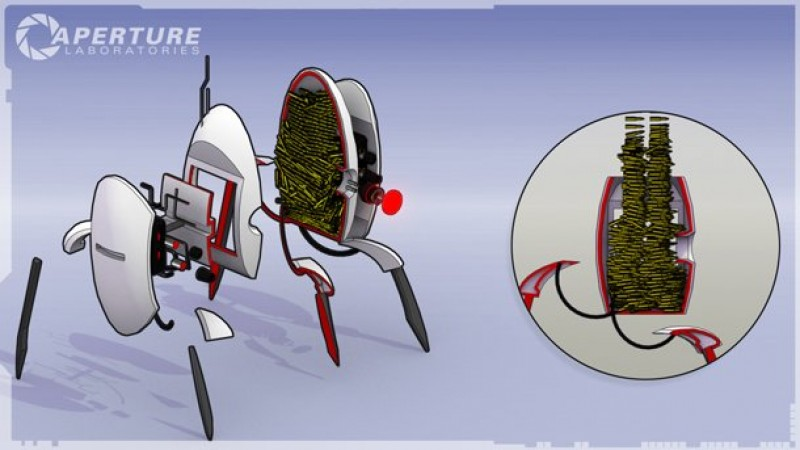
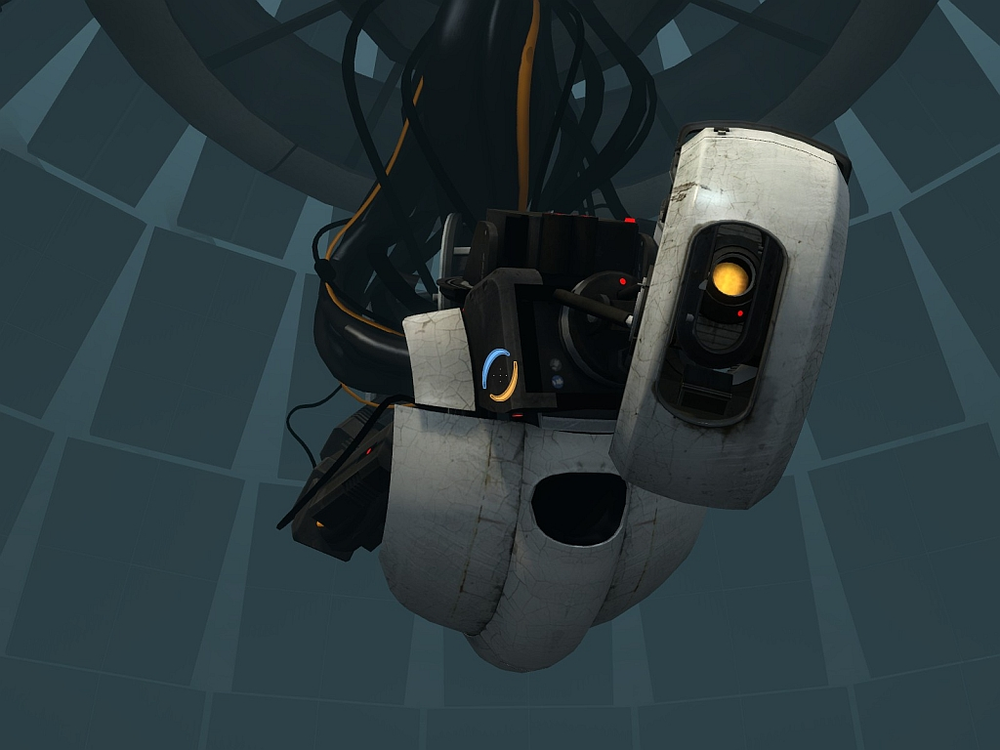

NOSSAS INVENÇÕES

Aperture Science Sentry Turret
Dispositivo de Portais Portátil da Aperture Science, ou DPPAS, é um dispositivo
portátil capaz de criar dois portais conectados um ao outro. Não
importa a distância entre eles, qualquer objeto que passar por um
dos portais, vai sair por outro, instantaneamente. Os portais podem
ser colocados em qualquer superfície feita de pedras lunares, ou que
é capaz de acomodá-los. Mesmo sendo uma incrível descoberta, esta
invenção ainda não é capaz de ser considerada capaz de bater a Black
Mesa em melhor empresa de ciências aplicadas do mundo, então ainda
está em constante período de testes. Porém, quando o Dispositivo de
Portais Portátil da Aperture Science finalmente tiver seu período de
testes concluído, e poder ser lançado no mercado, poderá ser
considerado a melhor invenção do século. Só espero que aqueles
idiotas não estajam trabalhando em nenhuma tecnologia de portais
também.
Torreta Sentinela Montada da Aperture Science, ou TSMAS, são a melhor tática de
defesa territorial que existe no mundo! Fabricados pela Aperture
Science, elas vão fazer qualquer pessoa não autorizada voltar atrás
de tanto medo que elas vão ter (tecnologia de identificação de
pessoas não autorizadas ainda não inclusa!). Sendo capaz de
emancipar qualquer situação, elas são perfeitas para deixar todos
aqueles com quem você se preocupa seguros e confortáveis. Nosso
segredo? Botamos a máxima quantidade de Munição para Resolução de
Conflito da Aperture Science dentro delas. Simplesmente despejamos o
máximo possível dentro dela. Vindo em diversos estilos, como Tundra,
Deserto, e Tarde na Improv, todos nomes escolhidos a dedo por cave
Johnson. Compre agora, e, caso ainda queira, se cadastre-se como
integrante da Aperture Science para levar ainda mais uma de brinde!
Bota de Queda Longa da Aperture Science, ou BQLAS, é a nossa bota de
segurança, que impede você de morrer! Durante muito tempo nos nossos testes com o DPPAS,
nossos integrantes acabavam caindo de alturas extremamente altas,
levando a danificação do DPPAS, e a morte do integrante. Porém, com
a nosa Bota de Queda Longa da Aperture Science, a gravidade ser
considerada uma inimiga é coisa do passado! Agora, um integrante
usando a BQLAS poderá cair de qualquer distância sem danificar o
DPPAS, e preservando a vida do integrante, é claro. Com isso, não
precisamos gastar tempo, dinheiro, e poder, tendo tanto nosso
precioso DPPAS não receber nenhum danificação, e nosso integrante
sair vivo. Bem legal isso né!
Cubo de Companhia com Peso da Aperture Science, ou
CCPAS, é o amor da sua vida, e ele nunca vai te abandonar. Ele está aqui para você, não importa o que aconteça, ele vai continuar estando com você, não importa o que aconteça. Ele te ama, e você ama ele. Não importa o que aconteça, sua união é inseparável. O Cubo de Companhia de Peso da Aperture Science é seu único amor nesse mundo frio e cruel, e ele vai fazer de tudo para ser recíproco nesse amor. Ele te ama, e você ama ele. Não importa o que aconteça, o mundo pode acabar, mas o CCPAS sempre vai estar aqui com você. Ele é o seu amor, sua vida, a razão para se viver, e nada que você faça vai mudar isso. ele te ama não importa o que aconteça. Ele te ama. Ele te ama. Ele te ama. Ele te ama. Ele te ama. Ele te ama. Ele te ama. Ele te ama. Ele te ama. Ele te ama. Ele te ama. Ele te

GLAdOS (Dispositivo de Portais
Portátil da Aperture Science), ou
ASHPD, is a hand-held device which
has the ability to manufacture two linked portals. No matter the
distance between them, any object which passes through one portal
will emerge from the other and vice versa instantaneously. The
portals can be placed on any surface which is made out of
manufactured or refined moon rock and large enough to accommodate
them. When the ASHPD is fired, a burst of colored energy is emitted
from the barrel, corresponding to the colored portal it is intended
to create. Upon striking the targeted surface, a portal is formed,
surrounded by a colored ring.